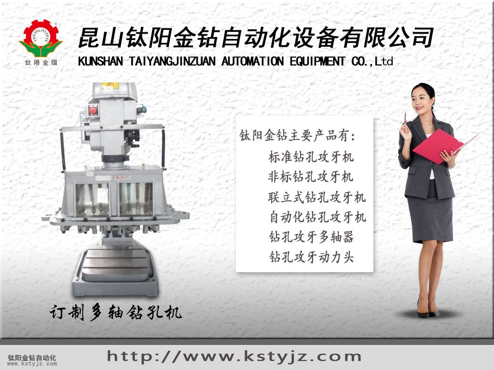
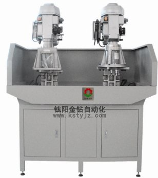

淺談自動攻牙機精密軸承的取出與清洗
文章出處：鈦陽金鑽責任編輯：kstyjz人氣：發表時間：2015-06-11 11:29
淺談自動攻牙機精密軸承的取出與清洗
文 / 鈦陽金鑽
1.保持手部清潔乾燥 全自動攻牙機
精密軸承從包裝中取出時，操作者的手應保持清潔乾燥，因為手上的汗水會導致生�蛂A必要時可以戴手套。
2.保證良好的潤滑效果
取出的精密軸承應立即進行裝脂和塗油處理，加脂精密軸承取出後立即作無污染安裝，不作裝脂和塗油處理。裝脂時在保持架與軸承外圈的間隙必須加脂，精密軸承加脂至空腔的30%為佳，高速精密軸承加脂至空腔的20%。
3.包裝要封好
精密軸承只能在裝配之前從原包裝中取出清洗。從易揮發緩蝕劑封存的多件精密軸承包裝中取出其中的幾套後，應立即將包裝封好，因為VIC紙的保護氣只能在封存的包裝中得以保持。自動攻牙機
4.正確清洗
加脂精密軸承在裝配前不可清洗，而未加脂精密軸承在裝配前必須清洗，清洗之後應晾乾並立即上防�蛌o或裝脂，以免�袘k。對精密軸承去脂和清洗可採用以下清洗劑：含水清洗劑—中性、酸性或鹼性清洗劑，在清洗之前檢查鹼性清洗劑與鋁質零件的相容性；
有機清洗劑—酸和無水煤油、輕質汽油(非車用汽油)、氟利昂12代用品或含氯的碳氫化合物清洗劑。精密軸承清洗時必須注意以下事項：環境保護、健康和工作安全性；清洗劑的操作方法必須遵守產品說明，以免發生危險。

===昆山鈦陽金鑽自動化設備有限公司====
上一篇：攻牙機零件的酸洗磷化 | 下一篇：自動攻牙機振動盤故障排除方法大全


推薦文章
- 攻牙機攻牙的六大核心
- 全自動攻牙機在操作上
- 人工鑽孔與全自動鑽孔
- 自動攻絲機中攻絲艱難
- 微孔攻絲機 優點剖析
- 鈦陽金鑽機器適用哪些
- 全自動攻絲機報價
- 多軸器的應用
- 攻牙機是電動的好還是
- 昆山自動攻牙機鈦陽金